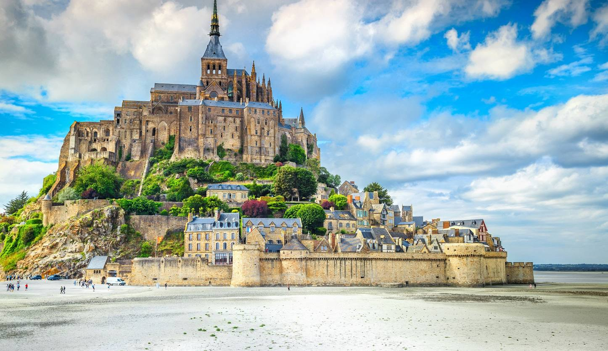
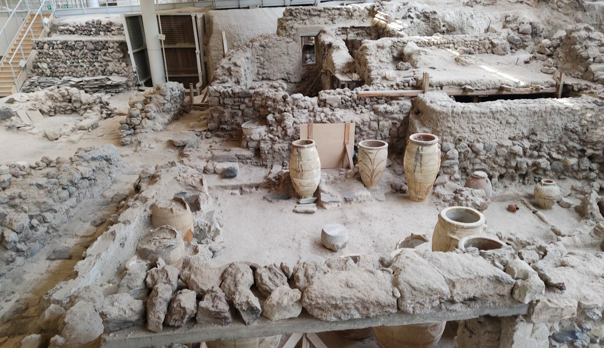
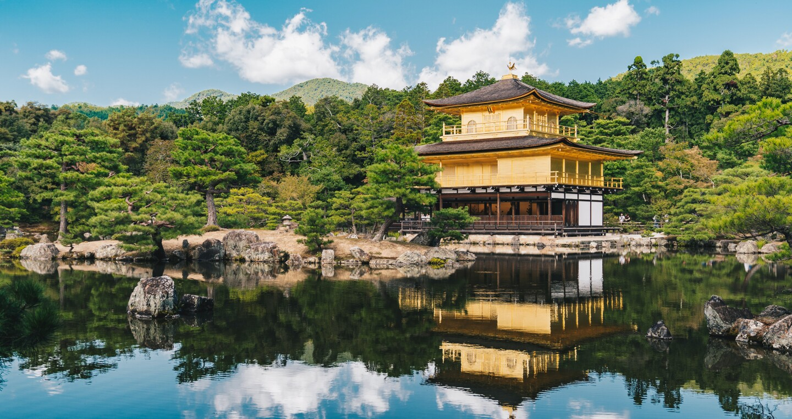
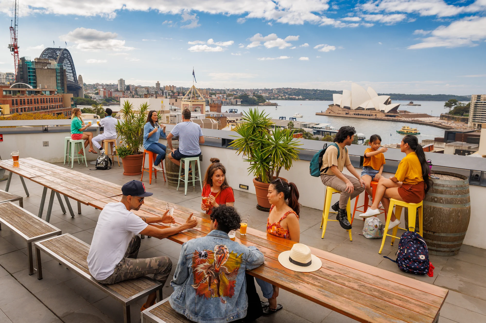
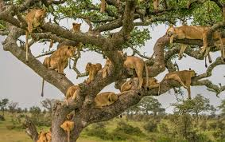
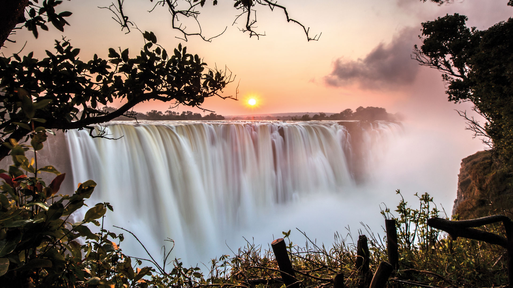
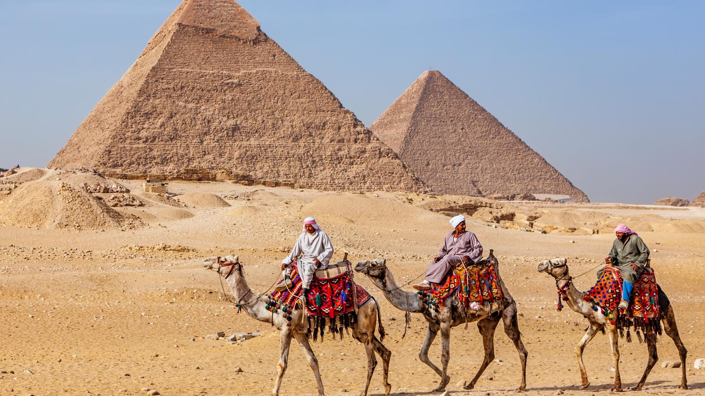
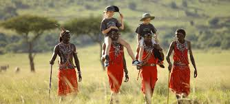
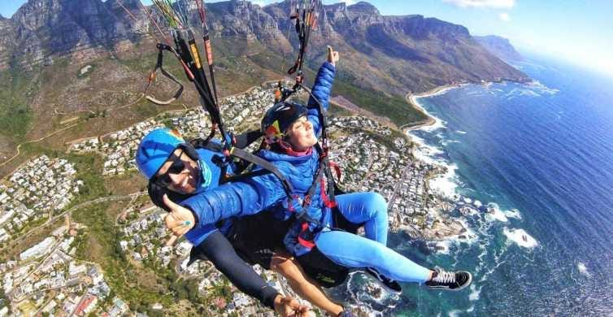
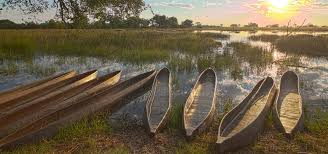

Paris, France Visit the Eiffel Tower. Explore the Louvre Museum. Take a Seine River cruise.  Paris, France.
Santorini, Greece. Relax on the beaches. Explore Oia's sunset views. Visit ancient Thera.  Santorini, Greece.
Machu Picchu, Peru. Hike the Inca Trail. Explore the ruins of Machu Picchu. Visit the Sun Gate. Machu Picchu, Peru.
Kyoto, Japan. Visit Kinkaku-ji Temple. Explore Arashiyama Bamboo Grove. Experience a traditional tea ceremony.  Kyoto, Japan.
New York City, USA. Walk through Central Park. Visit the Statue of Liberty. Explore Times Square. New York City, USA.
Sydney, Australia. Visit the Sydney Opera House. Relax at Bondi Beach. Explore the Royal Botanic Garden.  Sydney, Australia.
Serengeti, Tanzania. Go on a safari to see the Big Five. Witness the Great Migration. Hot air balloon ride over the plains.  Serengeti, Tanzania.
Victoria Falls, Zambia/Zimbabwe. Take a helicopter ride over the falls. White-water rafting in the Zambezi River. Bungee jumping off the Victoria Falls Bridge.  Victoria Falls, Zambia/Zimbabwe.
Pyramids of Giza, Egypt. Explore the ancient pyramids. Visit the Sphinx. Take a camel ride around the area.  Pyramids of Giza, Egypt.
Masai Mara National Reserve, Kenya. Experience a traditional Maasai village. Hot air balloon safari over the reserve. Witness the annual wildebeest migration.  Masai Mara National Reserve, Kenya.
Table Mountain, South Africa. Hike to the top for stunning views. Abseil down the mountain. Take a cable car ride to the summit.  Table Mountain, South Africa.
Okavango Delta, Botswana. Mokoro (dugout canoe) safari through the delta. Game viewing by boat. Walking safaris on the delta's islands.  Okavango Delta, Botswana.